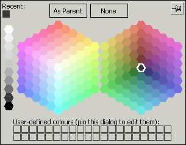

Pastel Palette
The Pastel palette is similar to the HSV palette in that it uses the HSV colour model and shares the same representation, simulating two views of the colour cube in 3-dimensional space.
As for the HSV palette, each half of the main palette consists of 91 colours, but the coding is as follows:
- All colours in the left half of the palette are pure (V=1). The saturation of the colours is stepped in units of 0.1 for each hexagonal ring, ranging from S=1 at the centre to S=0.5 for the outermost ring. The hues are ordered clockwise.
- All colours in the right half of the palette have a saturation value of S=0.5. The purity of the colours is stepped in units of 0.1 for each hexagonal ring, ranging from V=0.5 for the innermost ring to V=0.9 for the outermost ring. The grey colour in the centre has V=0.25. The hues are ordered anti-clockwise, so as to correspond with the left half of the palette.
Up to 40 user-defined colours are available.
 When to use the Pastel Palette
When to use the Pastel Palette
You should use the Pastel palette under the following circumstances:
- If you wish to define some of your own colours. The HSV and Artistic palettes also support user-defined colours.
- If you do not have to worry about colour depth issues on the target platforms, for example if you know that the maps will not be deployed in web browsers. Use the Web Safe palette otherwise.
- If you need a wide range of pale shades for your map. Many run-time applications have to be configured so that the map features themselves are clearly visible and clearly distinguishable from each other, but must serve as a background for the objects whose management is the purpose of the application. Real-time map-based monitoring and control systems typically have this characteristic. It is much better to use the Pastel palette than to simulate the pale colours using non-solid fill styles, since the use of non-solid fill styles has a significant effect upon the run-time performance of the map. You can add bolder colours to the palette as user-defined colours, as shown above.
Copyright © 1998 to 2025 by Envitia Group PLC.